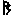

大毗盧遮那成佛神變加持經義釋演密鈔卷第八
【疏】如住阿字等者謂住三部字門及印等也今言阿字門者即如來部也何以得知次有金剛蓮華印故應云如住如來印時雖不言之義應必有影互說故如上入漫荼羅品真言支分中時薄伽梵從法界胎藏三昧起說入佛三昧耶真言真言如彼其真言最初句云阿三迷其阿字即是此中阿字門其印名為三昧耶印(印在密印品)言若住金剛印時等者(印如上指)其真言即是嚩字門嚩是金剛之慧即金剛部無勝三昧也以諸法語言道斷故乃至種種戲論皆滅等言若住蓮華印時者(印同上指)真言即是娑字門此娑字門是蓮華部普眼三昧遍觀一切世界自在加持蒙此加持者亦復胎藏開敷諸漏淤泥所不能染等言他皆倣此者謂漫荼羅一切三昧真言密印隨彼一一門中皆作此觀也。
【疏】如龍樹等者即彼菩薩中論偈云因緣所生法我說即是空亦為是假名亦名中道義謂不可攬令彼蕩者即空觀也又不可至不取即假觀也但當一心等即中道觀也言及此真言住心等者即此住心品中十緣生句不異龍樹中道正觀見徐運瑟手者即表假智也謂此寶珠初有微垢未得顯現即以假智之手次第披分開磔令至中道故得實相明珠在於心手方可名為見心明道之中耳。
【疏】獻塗香等者謂真言行者已得明珠在掌即是寶手三昧得此三昧若獻塗香供養之時即得無障礙戒寶即前三世無礙智戒也謂此塗香真言有尾輪馱句即以尾字為真言體嚩是金剛義離言說義嚩字加三昧畫是尾字尾是三昧如是定慧均等即是住無戲論執金剛三世無礙智戒也言獻華至慈生寶者謂獻華供養時彼真言中有妹呾[口*履]也句此云慈也即以妹字為真言體妹即莽字加三昧畫故轉聲呼之莽是心義我義亦是大空謂此淨菩提心樹王種子從慈悲地中滋長茂盛開萬德華此萬德華從大悲生故曰得大慈生寶言獻燒香至法界寶者謂獻燒香時彼真言初有達磨句即以達字為真言體達是法界義以眾生界本不生故乃至法界定相亦不可得故而瑜伽行者獻燒香時身語心業悉遍如是法界故名得燒香寶言獻燈明至燈明寶者燈謂破音如來智燈能破一切無明之暗而轉為明真言行者如是獻時即諸供養中第一供養故名得燈明寶如第六疏末廣明。
【疏】雖未能頓入法性等者謂此是於一月中漸修加行之時雖未能頓入中道法性須要以無所得而為方便如行者初習觀行或暫得相應現前縱使明白當於爾時即以般若無所得而為方便不應味著而生貢高設令隱滅亦以無所得而為方便則不追念而生憂悔若無般若氣分則是報業煩惱三障中人未能頓入中道法性但是頓悟修行之眷屬非是頓行之者云何能獲初悉地果初悉地即世間成就也。
【疏】隨行人心力勢分等者謂由三句和合故而廣大加持力生則能成就真言不思議業耳。
【疏】真言當無畏者無畏謂六無畏之第一善無畏也故第二疏云若真言行者初入三昧耶依三密供養修行位與此齊即是此也。
【疏】猶若因陀羅宗等者因陀羅即天帝釋也帝釋造聲明論能於一字之中具諸義利故能滿諸希願也又因陀羅彰重重無盡之理也。
【疏】然尚是生身等者此行者雖獲如是六根清淨莊嚴功德尚是父母生身未得法性生身即法華經父母所生清淨肉眼等。
【疏】四支禪門復殊異者四支禪那但是發禪之相墮於界繫豈同此中十緣生句觀一切法皆是自心實相若於如是實相心中作世間成就尚能即以此身遊諸仙剎住壽無量乃至廣利眾生等豈可同乎四支禪那耶四支者謂覺觀喜樂即是白骨觀中所得現法也修禪定者觀身為白骨時見骨起四種色謂青黃白鴿青色青光乃至鴿色鴿光狀如流水光籠骨人以青光力暎蔽十方悉見青色乃至鴿色亦復如是如是久遠不假功力光應自發若不發者當攝心諦觀眉間放之使發狀如竹孔吐煙初乃微小後則散大四色宛轉從眉間出遍照十方豁爾大明如是初色發時名之為覺分別四色名之為觀昔雖知肉內有骨不知骨中有色昔所未見喜慶悲慚名為喜支此色發時深有樂法心地恬愉名為樂支等如智度廣明。
【疏】見自部主等者如行者於蓮華部依多羅尊求成就時而於夢中見觀自在是名見自部主真言主者即多羅是或見明王者即是馬頭明王也金剛如來部亦爾。
【疏】當知蘇悉地等者且光顯者彼經云復次如法灌頂畢已應作護摩每日三時用酥密及酪乃至誦百八遍如斯光顯成就之物乃至佛部光顯真言曰。
唵帝誓帝若娑尾(二合)寧(上)悉焍娑(去)大也[合*牛]泮吒(二合)
蓮華部光顯真言曰。
唵你(去)比也(二合)你比也(二合)你(去)鉢也莽訶(去)室哩曳莎訶
金剛部光顯真言曰。
唵入嚩(二合)羅入嚩(二合)羅也滿度莎訶
乃至欲作成就法時先應初夜具作光顯之法然後成就言增威者彼經云為欲增加威力故應作護摩乃至或於山間常服五淨不食餘飡取本部華滿十萬枚各一真言奉獻本尊等亦復能令增加威力等。
【疏】應以當部之心等者心即心真言也佛部心真言者謂爾囊爾迦是也蓮華部心真言者謂阿路力迦是也金剛部心真言者謂嚩日囉(二合)時嘞(二合)迦是也言以當部母者謂佛部以佛眼為母蓮華部以白衣為母金剛部以忙莽鷄為母亦各有真言如普通真言品廣說。
【疏】阿含以四念等者爾雅云水中可居者曰洲今深秘釋中即以自心為洲於此洲上畫作法界大悲漫荼羅即依自心為自洲不依河潭名不異洲自皈亦爾阿含經中以四念處觀為自洲異此名異洲彼經云阿難當知如來不久亦當過去是故阿難當作自洲而自依(莫依他人)當作法洲而法依(四念住觀等)當作不異洲不異依阿難白佛云何自洲以自依云何法洲以法依云何不異洲不異依佛告阿難若比丘身身觀念處精勤方便正智正念謂伏世間貪愛如是外身內外身受心法法觀念處亦如是說阿難是名自洲以自依等。
【疏】不為四邊等者行者能以聲字本尊融為一相住此觀中有無俱非四邊執諍戲論皆得遠離是處無復障礙隨所趣向無不通達即是成就如來使者之用者。
【疏】如般若薩陀波崙品者彼經云諸佛教化安慰薩陀波崙菩薩令歡喜已忽然不現是時薩陀波崙菩薩從三昧起不復見佛作是念是諸佛從何處來去至何所不見諸佛故復大惆帳不樂誰斷我疑乃至爾時曇無竭菩薩語薩陀波崙菩薩言善男子諸佛無所從來去無所至何以故諸法如不動相諸法如即是佛善男子無生法無來無去無生法即是佛無滅法無來無去無滅法即是佛乃至善男子若有人分別諸佛有來有去當知是人皆是愚夫何以故善男子諸佛不可以色身見諸佛法身無去無來等。
【疏】復次行者自見心等者前依六根清淨釋成就義謂彼真言行者已得清淨六根故於瑜伽境界中見無量持金剛慧者金剛慧者即是金剛部中無量執金剛眾亦是大慧之門若行者堅住此中名為法愛為令捨彼法愛入於大悲故。
【疏】云復次行者自見心明道時謂行者現覺[合*牛]字門故即是聞大日如來語密授記之聲由此聲故而能振動彼金剛大慧心地故第二疏云行者已得除一切蓋障三昧爾時於自心中常見十方一切諸佛乃至常以勝妙方便啟悟其心梵音慰喻為決疑網行者隨聞隨悟不久成就一切佛法等。
【經】悉地出現品者悉地是所成之果出現即是果法出生顯現悉地即出現持業為名以金剛手第三問云何成彼果謂果有二種一世間果二出世果世尊於前品中已答世間果未答出世果次下二品方乃答之又欲明真言修證方便先明悉地之行皆從法界流出故有悉地出現品來。
【疏】於一切種類等者謂真言行者作成就時成就有多種類下經云如是計都朅伽傘蓋履屣乃至盧遮那等又偈云金剛蓮華力素鵝及金地真陀摩尼寶是等眾器物觀大因陀羅而作諸悉地等謂於如是諸悉地事從於一一種類之中若不見真言實義則悉地不得成就真言實義者即阿阿暗惡及阿味囉[合*牛]欠之真實義也如下備顯故曰於一切等。
【疏】當知如是悉地等者謂由阿字本不生故法爾如是又由迦字離造作故非行人等作乃至者超越中問佉字虗空等取最後訶字離諸因緣故即心之實相即是悉地之實相等故云當知等言即心之實相等者如上以四不生句及三力種種觀之都不出於心之實相謂此一法界心離因緣畢竟不生而不壞因緣實相是故此悉地出現之義即是究竟不思議中道之緣起爾。
【疏】以實相度諸魔事等者謂由真言行者於一切種類中皆見真言實義是故度諸魔事乃至隨其所欲皆悉現前也。
【疏】決定智印者謂此實相之心同於虗空離諸垢障亦無自性無能出其過者故名決定也。
【疏】至論宗極等者如略指示即上疏云以法常無性故即是本初不生本初不生即是入阿字門入阿字門即是毗盧遮那本地法身如是字門本地法身唯佛與佛乃能證之是故統論法華深趣不出于茲。
【疏】謂於虗空一毛端處等者正明依正無礙兼有分圓無礙一毛端正也佛剎微塵等依也此中文略應有六句若將一毛端現佛八相正內現正若一微塵現諸剎即依內現依一毛端現剎正內現依剎中有佛依內現正一毛端中有剎及佛是正中現依正一微塵中有佛及剎依內現正依如華嚴現相品云如來一一毛孔中一一剎塵諸佛坐菩薩眾會共圍遶演說普賢之勝行即正內現正第六經云佛剎微塵數如是諸國土能令一念中一一塵中現乃至六句彼文悉具理應更有依正現正正依現依若分圓者毛孔是正中分全身是正中圓微塵為依中分世界為依中圓如理應思又解謂於虗空一毛端處言但指外容一毛端空處非是佛身中分但顯所依器界廣狹無礙如次段疏云而佛剎不減微塵不增等。
【疏】梵本於四句偈等者謂今指梵本四句一偈之下更有一句助聲如此方文字之末或置已矣等言今為文便故通入四偈之中謂凡一偈之終多置引聲即助聲也若別置時即是伊底二字也如第四疏說三世無礙智戒偈末伊底字注云是助句聲又如彼中慰喻弟子阿利沙偈末云伊底疏云凡梵本說偈了皆加助句聲云e dhi 伊底皆是此也。
【疏】各於一法界門等者此諸菩薩不但自修謙退之行然於諸佛所得法界門中如隔縠等且如八地自在菩薩三昧道不得一切諸法離於有生知一切如幻是故世稱觀自在者又如補處菩薩住佛地三昧道此是究竟發菩提心於一切三昧道中最為牢強精進進入佛道唯少如來一位未得證智更有一轉法性生即補佛處自知如十四日夜月少分未圓故不敢於如來前有所宣說是有羞也故曰各於一法界門等。
【疏】今此三千偈至聞見者此悉地流出句今三千偈為存略故但說阿阿(去)暗噁四字名正等覺心又說降伏四魔解脫六趣滿足一切智智金剛字句所謂阿(去急呼)味囉[合*牛]欠五字此等九字則能成就世出世種種悉地若真言行者瑜伽成就六根清淨時自當具足聞見。
【疏】梵本羞字等者謂慚愧二法是別羞是其總故唯識言云何為慚依自法力崇重賢善為性云何為愧依世間力輕拒暴惡為性乃至云羞耻過罪是二通相由此梵名與慚愧異也。
【疏】以有羞故速生等者此中二事而有三重一者則自觀察如來種性不越正三昧耶故二者為十方聖眾常所稱歎故復次有二事從一切德未滿者能令滿足為一得與大悲等下為二復次有二謂住尸羅一生於人天二由此二法生種種功德等。
【疏】道種未具法器未完者道謂八聖道種謂菩提心謂菩提心為八聖道種故即菩提心為因也法器者即大悲為根方便為究竟若此三心之器未得完具三密醍醐無由顯現故曰道種等。
【疏】如蘇悉地滿足真言法者若行(者)作成就真言法時或心境不相應當依蘇悉地經作滿足法彼經云復次持誦之人於其夢中見真言主身諸支分加者應知真言字加支分減少應知字少委是相已作滿足法或見真言與受持者異心便生疑應作滿足法先以紙葉牛黃稀寫所錯真言如法供養乃至次禮諸佛作如是啟唯願諸佛及諸聖眾而加助衛護啟已於茅草上頭面東臥於其夢中本尊示相牛黃所寫紙葉之上有加有減本尊還以牛黃寫之題注滿足乃至加減點畫亦皆楷定若真言不錯但云不錯或於夢中指授滿足作此法時為除魔故作法衛護等。
【疏】如蘇悉地持明戒等者此第十句持真言者須得受持持明禁戒別律儀法隨事別制若不依持為障得便悉地難克故蘇悉地經說若有智者持諸真言先斷於瞋乃至邪神不應生忿如有偈云如世導師契經說能損大利莫過瞋一念須臾悉焚滅俱胝曠劫所修善是故應離於瞋又於阿闍梨所不得生於憍慢之心口不談說種種是非不見師短又復不得以自所持真言縛他明王及生損害并苦治罸亦復不應作降怨法不應跳驀一切有情兩足多足之類藥草根莖枝葉及以子實皆不應驀不得歌詠調戲種種嚴身罵詈語等不食五辛蘿蔔麻油米粉豆餅供養殘食眾生殘食等不得乘騎一切車乘及以鞍乘不於鎚銅器中食不臥大小牀榻不覆面臥不得仰臥須得如師子王右脇而臥不應再食不應斷食須得三時澡淨其澡浴水土須以真言加持真言如彼取要言之若行用時撿而取之毗盧供養大意不相遠耳。
【疏】能用悉檀方便等者謂於種種真言事業之中應以世界乃至第一義諦不失根會名之為知時應以世界而作事業而用各各為人乃至第一義諦而作之者則名非時故云能用悉檀等。
【疏】則能以金剛舞戲者即喻神變之相也如下疏云舞者如世舞人於大眾中顯示種種身業屈伸俯仰又出種種巧妙之音令彼大眾或生歡喜或起悲思或令恐怖以一身口所出方便令諸眾生所益不同菩薩亦爾現種種威儀無非密印出種種妙音皆是真言圓應無方故名金剛舞戲也。
經三世無礙力等者如來清淨智慧於一念中了達三世諸法無所罣礙即此無礙由自在故名之為力故云三世無礙力也言依莊嚴等者此三昧正是將說真言所依之處如初品中謂以如來清淨三業而自莊嚴猶如國王有大庫藏若須示人則自在開發而陳布之故曰莊嚴清淨藏也三昧如下釋。
【疏】一切眾生雖本等者釋通疑難也謂有難云一切眾生本來具有蓮華胎藏與佛無異何故如來乃能依此三昧眾生不能耶。
釋曰一切眾生雖本有蓮華胎藏等本覺具足也下奪云以無礙智力未圓滿故始覺未清淨也言又一切等者雖無礙事智眾生亦本來具然以惑障覆故蓮華胎藏未清淨所以照用不現前也。
【疏】梵音三摩鉢底等者三摩云等鉢底云至義景云至是能至體即定數等是所至即安和性是等之至從制伏沇掉名之為等此等却能引生在定分位此在定位定數從前加行因以得名是等之引名為等引若此中言等引者偈云於鏡漫荼羅大蓮華王座深邃住三昧離妄執分別乃至一月修等引持滿一落叉等謂行者如前觀自身作本尊三昧耶身又觀心處圓明清淨猶如圓鏡鏡中有八葉大蓮華王鬘蘃具足於華臺上有種子之字又轉此種子色聲義趣即見大日如來真實加持身相好莊嚴爾時行者以蒙法光所照心轉開明自然悟解十緣生故了知如是妙色不異於空雖復本性常空不異於色色相既爾心義亦然以色心皆入阿字門故則知心性本寂猶如虗空是名無相成就亦名秘密觀門三摩呬多地也。
答今此經乃是秘密不思議加持神通之乘依之修行初發心時便成正覺便轉法輪等況等引乎但等引地名字即同義用有異如聲是一隨器成異若吹入笙簫不出坐席如迴入笛中則聞諸四遠今此契入圓明字輪觀時即名等引不拘界繫也。
【疏】其等引名相等者彼論云一謂四靜慮二謂八解脫三謂三三摩地等四謂五現見三摩鉢底等此等名為等引地也非於欲界心一境性由此定等無悔歡喜安樂所引非為欲界於法全無審正觀察等若辨相者一所緣相謂所知事分體別相二因緣相謂定資粮三應遠離相謂沉掉等四應修習相謂對治如是應遠離相隨其所應當知即是應習相(云云)果立名又等至者此中等字即加行位定數一法至是所至在定分位即此所至分位之中定數一法從能至說名等至也。
【疏】若對毗曇等者謂以語言表宣所欲造作勝義是名語表業如是表業即是佛之常聲言又以十方等者釋成語表之義十方諸佛同共印可成就語言標表之義即語是能表義是所表能表即阿(短)阿(長)暗惡四字所表即菩提行果涅槃然此所明與毗曇淺深逈異而語表是同故云若毗曇等。
【疏】若欲指文等者即皈命句中句末[口*驃]字指文也種種如來巧度門辨相也謂此[口*驃]即與毗字同義毗者種種義巧義也。
【疏】此中修習等者此中者指此悉地品中名為此中今為此品正說二種悉地之事故指此品其實通指此經故云此中言非三摩呬多地者非者不也三摩呬多釋云等引等引是定義定是所依名之為地總就此方名不定地故瑜伽論云或有由自性故名不定地謂五識身或有闕輕安故名不定地謂在欲界諸心心所法或有散亂故名不定地謂始業者彼中多義釋不定義此中意者謂行者初見心蓮華中阿字等時任運安住乃至若觀本尊心佛為自身時即見自身在本尊心圓明中於自心上亦有微細圓明種子能令漸次增廣卷舒自在等雖得如是境界現前但未離心之影像故云非等引地等引地者行者身心所有輕安平等之性由彼定力之所引生是等之引從果立名故名等引或可等所引故謂在定位身心平等由前加行入定之時定數勢力。
【疏】漸次增廣卷舒自在者即廣狹自在無礙義也。
【疏】約涅槃經等者如彼經云譬如春時有諸人等在大池浴乘船遊戲失瑠璃寶沒深水中是時諸人悉共入水求覓是寶競捉瓦石草木砂礫各各自謂得瑠璃寶歡喜持出乃知非真是時寶珠猶在水中以珠力故水皆澄清於是大眾乃見寶珠固在水下猶如仰觀虗空月形是時眾中有一智人以方便力安深入水則便得珠汝等比丘不應如是修習無常苦空無我想不淨想等以為實義如彼諸人各以瓦礫而為寶珠汝當善學方便在在處處常修我想常樂淨想復應當知先所修習四法相貌悉是顛倒欲得真實修諸想者如彼智人巧出寶珠所謂我想常樂淨想彼經喻意為令諸比丘等捨離四種顛倒之想此中疏主欲令修行諸菩薩等以三密方便取自心寶故借彼喻也。
【疏】如華嚴迴向等者彼云菩薩摩訶薩常以種種名華布施所謂微妙香華種種色華無量奇妙華等供養一切現在諸佛及佛滅後所有塔廟或供說法之人比丘僧寶一切菩薩乃至及餘一切貧窮孤露布施之時以諸善根如是迴向所謂願一切眾生皆得諸佛三昧之華悉能開敷一切諸法願一切眾生皆得如佛見者歡喜心無厭足願一切眾生所見順愜心無動亂願一切眾生具行廣大清淨之業乃至願一切眾生入大寶洲見善知識具足成就一切善根是為菩薩摩訶薩布施華時善根迴向為令眾生皆得清淨無礙智故香燈等供如彼廣說。
【疏】又他月等者此與經文似不相符經云第二正覺句於鏡漫荼羅一月修等引持滿一落叉是為最初月持真言法則次於第二月奉塗香華等而以作饒益種種眾生類又復於他月捨棄諸利養等准此經文指第三月名為他月即初次他如是次第今疏云此中有兩月行即到初地也更問者蓋有深旨也兩月謂是他月滿月名為兩月行者於第三月正作成就於此月中前半月捨諸利養至十五日為滿月此月是入證之時對此稱他恐人難解故令更問又此有密釋即是令捨法愛也此行者大種善根不應於中而生取著若生法愛則為稽留不速入正位令於他月而除捨之謂行者從初發起大菩提心欲趣十地從師受得真言法則依於三月而作持誦次第配者初十住心即當初月次十行位當第二月十迴向位是第三月於斯位中分四加行前煖頂位屬於他月忍世第一屬於滿月於頂位中捨於法愛名捨利養然後滿月中得悉地已則到初地故曰此中有兩月等若地上論三月者謂初地名初一月即是菩提心此心若無大悲方便不得增發猶如池蓮不得日光終不開敷故上疏云月喻菩提心行者入初住地時此心極圓淨故名第一月從此已後用月喻之心起大悲萬行供養三寶廣植善根乃至入不動地名為一月從無動地已後復以月喻之心起無量方便智業正順迴向如來悉地名為他月至金剛道名為滿月次到如來地也若依一一地亦具三月如第二疏准傍三心說之理亦無爽。
【疏】以文解之即是捨於八法等者謂利衰毀譽稱傍苦樂或違世順世八心此等應捨若深釋者離法愛也若生法愛則稽留行人不速入正位故智度論云菩薩摩訶薩不以方便行六波羅蜜入空無相無作三昧不墮聲聞辟支佛地亦不入菩薩位是名菩薩摩訶薩法生等法生即法愛生也謂由行六度三三昧故不墮二乘由不以方便故不入菩薩位言不以方便者不以無所得為方便則為六度三昧等之所留礙也。
【疏】注云然外事等者不求者不起希求之想世人多求世利奉養泡身為妨道故須當捨離不受者設有施來者亦不受之言捨此利養等者非為受已而施眾生謂以捨利養之功德迴向三處眾生是三處中一處名施眾生也。
【疏】此是一切真言心者謂獻華即以華真言香以香真言等今三力與香華等真言為心故云是一切真言心也。
【疏】凡聖皆等獻者。
問佛及聖人可以言獻云何凡夫亦言獻耶又下文中云上獻一切聖眾下施一切有情如人以物度與尊上故得稱獻若與下類故名為施何故此言凡聖皆獻耶。
答行者以華供養之時運自一心普周法界名之為遍觀一切凡夫不見凡夫之相即同諸佛是故凡字於聖字上置之蓋有以也又一言其凡夫而內外不同謂就內凡則言上獻若約外凡則言下施故不相違也。
【疏】於一切法空等者大空也謂即欠字是一切智所證理故言遍一切虗空者即是遍伽伽那之十方虗空也故云於一切等。
【疏】淨同金剛等者謂色體名無不淨妙故云淨同金剛也又解言名同金剛也者結上二事也下言淨同金剛即第三事也故疏於此下結云以此三事同於金剛等。
【疏】或可蘇悉地等者彼云所成就物每日三時以香薰之以香水洒以真言加備又以眼觀視其物以吉祥環安置於指揮按其物以牛黃水或白芥子洒散其上加諸供具奉獻彼物若白月成者取十五日若黑月成者取十四日皆用部母真言復重加諸香華鬘等物供養以香塗手安置茅環按所成物畢夜持誦於夜三時誦百八遍如斯光顯速得成就等又說取物之法於黑白二月八日十四日十五日日月蝕時地動時日於其午前而取其物於念誦時得境界已然後應當而取諸物或澡浴清淨不食持齊求善境界而取諸物所說須物隨於方處所有是物者而就貨買不酬價直而取諸物所取諸物各依本性上中下品取上好者如法得已應加精勇作成就法等。
【疏】彼如來是一等者謂一切世界現在如來通達方便波羅蜜故知法是一離於生滅斷常一異去來若分別生滅斷常等亦本性是空但為度脫眾生故以方便波羅多之力而於無為果體之上而以有為為眷屬此眷屬字經是表字言別義同。
【疏】見法安樂等者見謂證得法謂正等覺心悉地之法行者以此悉地之法而自娛樂故名見法安樂住發歡喜心者即是行者初證歡喜地也故唯識云初獲聖性乃至生大喜故等又下疏云見法謂證得也住者謂自見已復授諸眾生等由見此事自他俱獲無上法利故等。
【疏】以大日如來置方隅更問者謂此所成就物通於三部若佛部成就物大日如來祇在本位若所成就物屬金剛部或蓮華部其大日如來即移置方隅何以故以彼所成之物隨部而為主故蘇悉地云若欲成就酥等諸物作漫荼羅其量四時四面安置諸印乃至外院置八方大神次於中胎置所持部主印所成就物隨於本法所說置於其中安其部主中胎上其物東西置本所持印及護摩鑪等今疏云更問者謂已作漫荼羅大日如來已在中胎所成就物屬於餘部即合移大日置於方隅故令更問。
【疏】如舃得成者舃履也崔豹古今注曰木置履下乾[日*昔]不畏泥濕故曰舃也。
【疏】遍於內外身分者內謂身內外謂身外身內者即下經云復次於嚩字行者依瑜伽解作業儀式利益眾生故心水湛盈滿潔白猶雪乳悉遍諸毛孔流注極清淨從此內充溢遍滿於大地等身外者經云上身囉字門嚩字臍輪中乃至囉字為下身訶字為幖幟等故云遍於內外身分也。
【疏】觀一成時等者謂此本尊種子圓明即三而一即一而三不相妨礙是故一成三皆成就即得名為三落叉也。
【疏】此定應者等者此即指屬定即普賢等所證之定應即應現者即假者謂行者瑜伽相應之時此普賢金剛等以定果之身必垂應赴雖垂應赴或一或總不可定准若總現前當知成就若隨一尊應時則未為成就也又解末字應是亦字隨一現時亦得成就也。
【疏】秘說可以意得者若秘說時普賢等即真言字句也行者瑜伽中觀此真言之句須得齊現若隨有所闕未為成就則知有障若總現前分明顯着則知成就亦知無障故云秘說等又或一字現時亦得成就如種智字等。
【疏】謂上煩惱等者謂諸微細煩惱名上煩惱故起信鈔云勝品名上以恒行故凌上名上惱十地上人故對於下乘非煩惱故此是最難伏處今以阿訶之字而能伏之或上所說三毒煩惱也。
【疏】親一切與等者經云一切親證者約自利果圓也疏云親與者利他行德也經疏影互上下數有。
【疏】阿字經云如先等者此阿字經中所無今疏置之者意云如先正思念謂如上文所說思惟阿字依法而念誦也。
【疏】此即菩提心等者謂行者轉此阿字作本尊之形此即行者菩提心中所見實相之佛實相之佛者即是法界不思議緣起之佛不同其餘妄想心數中之所見者故云此即菩提心等。
【疏】阿是行等者此阿字經中注云去急呼將欲次第顯之先彰其具體所謂去聲急呼之a 阿字也言所謂本不生行也者即去聲a 阿字也言傍二點是淨除義者即前去聲阿字傍置二點即涅槃點也言以此義至一切苦者謂以此去聲三昧能降伏四魔以傍涅槃點除一切苦即是去聲急呼阿字之義也言又有三義至大空也者謂味是解脫義囉是大智義[合*牛]是法身義如是三脫不縱不橫無先無後即歸欠字大空也。
【疏】如佛初欲成道等者按西域記菩提樹垣正中金剛座昔賢劫初成與大地俱起據三千大千世界之中下極金輪上侵地際金剛所成周百餘步賢劫千佛坐之而入金剛定故曰金剛座為證聖道所亦曰道場大地震動獨無傾搖是故如來將證正覺歷此四隅地皆傾動後至此處安靜不傾若不以金剛為座則無地堪發金剛之定今欲降魔成道必居於此故賢劫千佛皆就此焉今即同彼故曰如佛初欲成道等。
【疏】空無定形等者此中所出四角者即阿字地輪圓環者即嚩字水輪三角者即囉字火輪半月者即訶字風輪更有第五欠字虗空輪為無決定之形而現種種種種者四輪不一曰種種也。
【疏】赤中之赤等者世間之火熾焰極赤此又過之乃至燒中之燒義同故云赤中之赤等又釋世間之火若燒物已但為灰燼此囉字智火燒煩惱已則能隨生諸善功德由是故云燒中之燒等。
【疏】謂須火用作之等者謂此囉字必須作火用即是作護摩之用即作攝伏事也外則攝伏惡人內則攝伏煩惱於此事中得自在故故云謂須火用作之也言及發怨等者謂他人於自發起怨者作此火用之時能令自他俱得成益自益謂不為他所惱害他益謂令彼善調得作佛道因緣故也。
【疏】空而復空者上之空字即是訶字之空謂訶是因義由有因故即能造業招果以入阿字門故因業果三事皆寂猶如虗空又此訶字轉入佉字佉字本體是空義故或但拂前空相故云空而復空也。
【疏】亦能作諸神變者謂以囕字置於足間則能遊步虗空置於眼耳等門中隨義作諸義利名亦能作諸神變也。
【疏】又下安囉字等者謂如前先於臍已上安置囉字於囉字上安於幖幢幖幢之上而安訶字如是次第故云又下安囉字等。
【疏】而面龍方者行者非直而向於西南方也其西南方正屬囉剎方非是龍方以龍方者即屬西方謂此西方收於二位一是地天位一諸龍位為地天正在西門其龍位今於地天之南安置行者面向彼方作法非直指西南也。
【疏】種種雜色者即經云各各眾事業也此是風輪中所作種種事業非是欠字空輪中所具眾色名為種種雜色也。
【經】成就悉地品者成就者獲得之稱悉地者成就為義未審成就與悉地為一為異若是異者何故前來翻譯悉地而作成就若是一者不應雙置然此一題義包因果上成就字乃是行者能成就因下悉地言即是真言所成就果故經偈云摩訶薩意處說名漫荼羅諸真言心位了知得成果此一偈上二句釋成悉地二字摩訶薩者即告金剛手也意處即心處也離此心外更無一法而可得者為令人易解故諸佛如來強以名言分別說之名漫荼羅即是眾生自心之漫荼羅也但以無明所覆不自識知下之二句釋成成就二字謂上意處漫荼之果依何方便而能證得若行者依真言為門即能了知真言心位不異漫荼意處即是始覺契同本覺名為得果即上二字是能成下是所成是成就之悉地作依主釋又因果不二成就即悉地作持業釋謂前出現品如來答金剛手第三問云何成果雖說世出世種種之果皆從字門出現未說即心成就方便今具說之故此品來。
【疏】然以四種等者謂一切眾生雖自心即是華臺之藏鬚蘃眾葉宛然具足然以四種煩惱常俱生故一者我癡謂即無明愚於我相迷無我理故名我癡二者我見謂我執於非我法妄計於我故名我見三者我慢謂倨傲持所執我令心高舉故名我慢四者我愛謂我貪於所執我深生躭著故名我愛此四常起擾濁內心令外轉識恒成雜染有情由此生死流轉不能出離故名煩惱等如唯識具明。
【疏】如二乘入道等者如二乘人初入道時師問遮難則知彼人有決定入道之心也今此決定心即是三昧三昧云誓也由此平等誓故則是具定心此決定心是質多心慮知心也後汗栗駄心處中之心也若能證此心中之心即是如來之決定心注云謂三昧也是故經云決定心歡喜說名內心處明此但是一心也。
【疏】是事不然雖問無益等者謂此一乘無上之果要由自證若不自證雖問終無所益如人聞說天甘露味若不親甞縱種種方便說之終無所益又如盲人問他乳色何似他人答言其色如貝粖雪鸖等雖聞此說終不能了乳之之真色是諸盲人各各作解競執貝粖雪鸖而起四諍良由不親證故雖問無益也。
【疏】當引央掘不盜戒義者謂如上說諸佛無上菩提之果即是眾生自心離此心外無法可得但要自覺其實無人能授與者故引彼經而釋成之梵語央掘魔羅此云指鬘謂以眾多人指而為鬘故如彼經云爾時世尊告央掘魔羅汝今當受不與取戒央掘魔羅以偈答言我今亦不能受持不盜戒常受不與取劫盜他財物不與者菩提無有受與者不與而自取故我不與取等若如是說者是為真實持不與取戒也。
【疏】亦不作餘對治等者只如此經初品之中世尊欲令行者如實知自心故說虗空譬喻令於薀處等種種觀察次第對治心外之垢皆如虗空漸次得見心法明道今則不爾令諸行者直觀心處而得之耳故云亦不作餘等言此心之處等者此心指肉團心處梵語汗栗馱正云迄栗(二合)那此譯為肉團行者若觀自心即佛之時初觀內心作大圓明圓明內中有種子字轉此種子為本尊身本尊心上復有圓明等若以阿字本不生句觀之則無內外能所之異本尊心即是自心自心即是本尊心如是不二而二二而不二故云此心之處即是凡夫內心等也。
【疏】其餘四隅之葉等者四隅是四方之餘此曰隅四葉即配四攝准上所說東南隅葉是普賢菩薩謂此菩薩即名賢缾能出種種行願之寶普施眾生即是布施其西南隅是文殊菩薩此菩薩達一切法本來平等佛及眾生皆同一相名為同事其東北觀音菩薩此菩薩凡稱念皈投者無不隨心而作利樂名為利行其西北隅是慈氏菩薩此菩薩以慈愛為本能以耎語攝化眾生名為愛語故云餘四隅等言次知彼果更問等者。
問向來次第無不從阿字本不生菩提心故而次明長阿字之行次明暗字大空後明惡字涅槃如次即是菩提心為因大悲為根方便為究竟今此中從阿字本不生便明暗字大空方便方辨長阿字大悲萬行豈不違於前文兼失發心修行證理因果次第耶。
答字輪之義勢變多端前從本不生次行後大空者是約證悟所謂發心修行證果次第如是今約解悟所謂發心悟理修行證大涅槃如是次第故不相違也。
【疏】今欲教彼眾生等者謂一切眾生諸識心所皆以無明為本源也若變無明為明何有識心可得故起信云破和合識相滅相續心相顯現法身智純淨故故云今欲等。
【疏】此經聖者所秘等者謂此經是秘密真言之藏傳法聖者如佛密意而傳通之故釋序云夫經中文有隱伏前後相明事理互陳是佛方便由如是故傳法聖者豈得不秘之乎。
【疏】此唵字當觀在頂者。
疏釋經文必不浪加謂雖已發菩提之心須藉大悲三昧方便然後得至菩提之果猶如蓮華若不得池水滋發終不開敷心蓮華亦爾經意存略但置暗言疏文備彰故標唵字無相違矣。
【疏】問水從阿字等者為前疏異經文暗字作唵字釋記今還問之若依菩提心大悲方便是以作如是釋畢竟還許從阿字菩提心水直流至暗字方便已不答亦有之如前所明發菩提心成菩提已還起大悲此約解證差別作此問爾。
【疏】以無垢眼等者此無垢眼即是囉字之眼謂以囉字想置眼中名無垢眼非肉眼也又此囉字上安空點名法界心故云一切皆法界體也。
【疏】亦見如來句等者謂欠字門也欠是虗空義諸佛皆以諸法空而為座故也。
【疏】所謂六自在王性清淨者謂眾生六識猶如寶珠體性常淨而為塵垢所染若瑩去其垢即得明淨一切眾生心源清淨之時六識亦皆純淨即是六自在王如來也故佛名經有六佛所謂眼陀羅尼自在王佛耳陀羅尼自在王佛乃至意陀羅尼自在王佛即斯義也。
【疏】此邏字是相等者梵語邏乞洒此釋云相上有點者謂la 邏字上置大空點也謂laṃ 覽字也言三空者即空空空大空也謂第一無相之法諸相本空即初一空也又一切相當體不生即空空也又由諸相本空當體不生故即是大空故云此邏字等。
【經】轉字輪漫荼羅行品者轉謂旋轉即旋陀羅尼謂行者若見阿字當知說菩提心義乃至若見長噁字當知顯方便之力若見迦佉乃至娑訶等二十八字當知皆是慧門若見伊等當知即是三昧門若見仰等五字當知即顯大空之點是成佛義若行者了達是義則能入一切陀羅尼義名之為轉字即文字即此字門安布旋轉無礙猶如於輪名為字輪輪是其體轉是其用攝用舉體皆持業釋故名轉字輪漫荼羅名義如上已釋漫荼羅是通名以別揀通轉字輪之漫荼羅作依主釋行者造作亦通多義轉字輪漫荼羅之行亦依主釋故名轉字輪漫荼羅行如上金剛手初問佛佛從初至竟皆答此問中間他語間斷今佛騰前意而答之故此品來。
【疏】如來現法之樂者即如來力無畏不共法等大涅槃之樂也即前經云逮見如來句乃至佛無過上智等。
【疏】然明及真言等者謂有疑云何故此中有處云說此真言有處云說此明妃為真言與明一耶異耶由此疑故是以今云然明及真言義有差別若從如來心口出於言說者名之為真言若從如來一切身分任運生者名之為明若爾何故經言從三昧起說此明妃豈非口說耶釋曰雖從身現即是說故此即名為身說如楞伽經云或有佛剎瞻視顯法或有揚眉或有動睛等令諸菩薩得無生法忍亦身說也又欲顯法離於言故故說身現名之曰明欲顯無言不礙於言故從口演名曰真言是故明與真言體無異也。
【疏】由增長義故女聲呼之者謂此明妃能增益生長行者功德法故女聲呼之梵云尾你也(二合)此是男聲梵云尾你即是女聲俱譯云明由隨增長義故加以妃言也。
【疏】阿鉢囉底三迷問之者令問此真言句義并字義若句義者如第三疏中釋為無等無對之義謂此明妃出過一切語言譬喻無有一法可為倫疋故云無等若字義者阿是一切法本不生義跛是第一義諦義囉是塵義以一切法皆入阿字門故即是第一義諦中塵本不生底者正體是多字門帶三昧呼即是心義亦如如義謂如於自心如實之相即是菩提心此心無比無對名之為無等即是阿鉢囉底真言之句故令問之疏明妃如來身無二境界者明妃即上真言句也無二境界者明妃如來無二相故謂如來者即是等空三昧即是無勝三昧即是同至所住即是勝願聚此多法名之為身故云明妃如來身等又此明妃從如來身任運現起即如來身為能現妃為所現此之境界畢竟無二若不悟此理無由成佛何以故見二境界故。
【疏】如擲金剛等者謂表如來金剛之智從於法界虗空之中而作加持轉此諸佛秘密智印入於一切眾生心地故曰如擲金剛等。
【疏】本初即是至更問者此本初一字應是阿字阿者即本初義如上第五疏云如梵本阿字有本初聲本是一切諸字之本母故初者在一切諸字之首故由此出生一切諸法亦即壽量義也故云本初即是壽量更問也。
【疏】雖云自歎等者謂梵音云我者即牒梵音我字也我字梵音麼麼即此麼字帶阿聲呼即是我本不生以不生故即是本來常寂滅相故云雖云自歎即說法也。
【疏】然佛以加持力等者釋通妨難也謂有難云上云今說自證之法如飲水者冷熱自知云何金剛手等皆知之耶故此通云然佛以加持力等。
【疏】亦如酪中現酥等者謂於酪中現知生酥熟酥醍醐諸味共住一處而不相離佛座亦爾一言滿荼即於其中現知堅固不動無等無比之義共在其中雖具種種之義周遍法界然以大願為體故經云能見勝願佛菩提座。
【疏】不離如是妙理等者即指此座猶如虗空離一切分別戲論若直就字門即阿字也雖諸菩薩如是修行種種方便然亦無二無別不離如是本不生微妙之理即阿字也如是解時故云與理相應也。
【疏】一切世間出世間功德等者若離阿字本不生句一切世間出世間若定若慧不得增益若就字門談者定即億伊等三昧慧即長聲阿字若離阿字本不生即長阿之慧億伊等定不得增益成就也。
【疏】一一與三昧神通相應者三昧定也神通慧也三法相順則與理相應若隨有所闕則不相應謂此真言之行名瑜伽行瑜伽譯云相應即定慧相應復兼秘密則名不思議行也故下疏云先須住此三昧以相應之智而運布規量故云與三昧神通相應也。
【疏】次禮一切佛等者謂阿字真言之體即是諸佛之體何以故今此阿字即能作諸佛事乃至普現色身等故云禮一切佛者即是禮於阿字之體也。
【疏】即定乾巽隅竟更問者謂師在巽隅弟子至乾隅即是定東南西北隅竟更應艮坤相對此中無之故令更問不是令後人更問也謂當期善無畏阿闍梨為禪師顯示至此有所未盡或令例准或有別意禪師囑付智嚴法師問於無畏三藏故云更問也。
【疏】即是本來無有繫縛者梵云縛馱或云滿駄此譯為縛言體一門異者若從體說謂一切法本來不生即無縛解故云體一若從門說阿與縛殊又此阿縛二字由不相離故體一由不生無縛故門異故云即本來等。
【疏】如上引繩等者謂如絣之三字語句不全應云如絣之勢以如上師資相對引繩猶未至壇地但作絣地之勢具未絣之故云如上等。
【疏】如上無二相應等者此明入第一院漫荼羅事也謂上經云本寂無有上又云世尊猶如虗空無戲論無二行瑜伽相事業成就上疏釋云此本寂言而有阿聲即顯本不生義以本不生故名為本寂謂本不生猶如虗空離諸分別戲論雖諸菩薩種種修行然亦無二無別不離如是妙理故又云本不生者即阿字輪入此輪時與佛同體無二故即是空性之體何以故性空即佛故故華嚴經云法性本空寂無取亦無見性空即是佛不可得思量即此是也。
【疏】想文殊或想字者字即滿字也如真言藏品。
【疏】以阿字本不生至轉用也者問為以阿字本不生至得轉用者阿字只與嚩字不相離故還許迦等諸字與阿字亦不相離以不若許亦不相離者何故但取嚩字得轉用耶答其實阿字與迦等諸字亦不相離以行者為作金剛事故轉遮那之體為薩埵之身但與嚩字相應故得轉用也。
【疏】以阿字義入等者謂嚩字詮語言義由阿字入中故即一切語言本來不生本來不生即語言道斷名為本寂也。
【疏】次捨第二院等者謂最初於第一院下色了超過第二院先於第三院下色了然後於第二院下色其中密意上數說故。
【疏】廣大法界等者念誦中說偈云般若三昧手俱作金剛拳二空在其掌風幢皆正直如是名法界清淨之秘印也。
【疏】不合是阿字等者謂經云思惟字明照本無大空點今疏言不合是阿字者恐人於經句本無字上解作阿字謂阿字者本生故為遮此解故云不合若爾經言本無是義云何言本無者謂本空點本來無相經就五字成句故云本無大空點也言義合用囉字加點者即囕字也若義合用囕字即違經云本無大空點如何和會若會釋者言本無者謂此囉字本來無垢名為本無言大空點者即是合加大空點也以五字成句故又兼密意故不相違。
【疏】次下黃色等者謂下黃色時令想迦字作真金色何所以耶謂此迦字即屬金義梵語迦諾迦此譯為金所以令當想迦字作真金色也言是金色牟尼佛也者梵語迦諾迦牟尼此云金寂即是七佛中第五俱那含牟尼如來俱那含不正也故云是金色牟尼佛等。
【疏】當想麼字等者此字即是度生死義謂世間生死煩擾眾生不令寂靜釋迦已能越度故稱能寂若要顯示此字義者轉此麼字即為牟字梵云牟尼此譯為寂言此佛坐於大菩提座者即以此字為菩提座也謂此麼字是大空義佛以諸法空為座故言一切佛用此字等者梵語麼麼此名為我一切眾生以有我故恒被生死之所恐怖譬如無智畫師以種種三界之色畫作生死可畏夜叉自生怖畏今亦如是是故如來以無我之大我能除滅之故上經云我昔坐道場降伏於四魔以大勤勇聲除眾生怖畏疏釋云佛初坐道場降魔軍眾時以誠實言告彼波旬我於無量劫為調伏眾生故棄捨身命不可稱數而今悉已成就有入道之宜故我將證菩提為彼等眾生開發淨眼汝之勢力何能留礙耶適發此聲時一切眾生怖畏悉除天魔迷悶躃地尋皆退散此中大勤勇聲者即我字是也故云一切佛用此字也言西方名虹帝釋宮者虹即虹蜺亦名螮蝀其形圓滿五色絢明如帝釋之宮殿又應用此弓字謂虹狀如弓故西方之人呼為印涅哩駄努即帝釋弓此釋為正也。
【疏】此是阿閦如來者謂此訶字加三昧大空即是吽字此吽字是阿閦如來真言種子也。
【疏】一切諸佛等者此一句六字應貫續上句俱屬呪前所皈所以令更問也何以知然謂下有弊也(二合)字故即云歸命一切如來等一切門等故屬所皈入此門者即入一切諸佛境界故云一切諸佛以為首望若行者初入此門時即有成佛之望故以為名也。
【疏】娑嚩訶至更問者若以字義釋時娑嚩是自亦是本義訶是誓義注中寫悞也若以句義釋時娑嚩訶是自誓亦是警覺等。
【疏】復彼分位三棄捨者謂此南方屬閻摩方中置金剛手又於金剛手左右留三分位是金剛使者之位於此三分位下畫金剛部一切眷屬故名三分位棄捨。
【疏】然此壇中等者此中於第三院畫了釋迦並無眷屬言上下互現者上即入漫荼羅品下即此品或彼中闕者此中有之故云互現也。
【疏】初印護身等者初印即法界印也言次更有一印者即金剛薩埵印也如密印品。
【疏】彼法輪次結等者此中與漫荼羅具緣品大體是同彼處經云結法界生印及與法輪印金剛有情等而作於加護彼疏釋云法界生印印心法輪印印臍輪上金剛薩埵印印諸支分所謂五處即是心額喉頂左右肩上也所以云更問。
【疏】不空手等者謂手有華也如金剛頂瑜伽念誦法第四卷即教弟子竪忍願二度為針以白華鬘掛其針上應是此耳。
【疏】耳語教之等者即耳語為說三昧耶偈此或若具支灌頂者得受結緣灌頂者不合聞之故耳語告之別有說處者即前漫荼具緣品授法輪法螺已正是說處或指金剛頂念誦法名別有說處也。
【疏】更問何印者即三昧耶印也何以知之謂第二經云次應當自結諸佛三昧耶三轉加淨衣等又即此經云耳語而告彼無上正等戒次當為彼結正等三昧印授彼開敷華令發菩提意等故此三昧耶名為一切如來金剛誓戒此真言之印在密印品耳若預知者結金剛縛以智定度捻檀慧度中間以進力度少曲相柱是也。
【疏】一切與更問者謂如上師為弟子作三昧印等令擲華於壇中隨華所墮之尊或金剛部尊或蓮華部尊隨何部尊有種種真言印法名為一切非為諸部之一切也若作傳教灌頂者即是諸部一切故云更問。
【疏】次當作生一切支分印者此印金剛薩埵印故第六疏云金剛薩埵加持支分已令依吉祥坐法而坐其中是也又秘密八印品說二手作未開敷蓮華合掌建立二空輪而稍屈之是名如來一切支分生印。
【疏】於弟子頂等者此中應云十字縫上想作暗字其心中極想作阿字傳寫者悞對經可悉經密印品者密謂秘密印謂幖幟順世立稱故名印也說文曰印者執政者所持信也今此是執真言者所持之信也又如世人王秉歷代之命寶八表欽而畏之如來法王嚴法界之幖幟八部信而從之又簡彼顯故謂顯教中或說一法界印或說三法印四法等密宗乃是手印即謂之幖幟是密之印故云密印此經以三密為宗行者雖口誦真言心想本尊若不持密印則三密不具如世鼎之三足闕一不可又如伊字三點闕一不成又此密印乃是法界漫荼之幖幟若隨有所闕則法界不具故此品來。
【疏】初說迦羅等者此約法華明迦羅三摩耶二種之時也方便品云爾時佛告舍利弗我今此眾無復枝葉純有貞實舍利弗如是增上慢人退亦佳矣汝今善聽當為汝說舍利弗言唯然世尊願樂欲聞等皆名迦羅之時也此約感應嘉會之時又云諸佛世尊唯以一大事因緣故出現於世乃至諸佛世尊欲令眾生開佛知見使得清淨故出現於世等即三摩耶時也此約正說經之時分也。
【疏】次說手印等者此上七字是標說手印之相言不越三法已下九字乃是經家結釋三昧真言功德何以復於此印相中用之豈不相參耶故會釋之者非但三昧耶真言功德不越三法道界圓滿地波羅蜜欲令身印皆具如是功德又顯三密不相離故故無相參之失。
【疏】此行者雖未能等者謂此真言行者未能證一切法體即是真如之性縱也奪云但能作此法界之印誦此法界之真言亦即體同法界之性何以故離此手印真言無別法界等也。
【疏】呾摩(二合)俱含者呾摩體也身也俱含我也謂我身即金剛也。
【疏】能斷害身見等者謂此慧刀之印行者作之能斷身見及俱生見垢此言及俱生見即是邊見非後三見何以故故唯識云十煩惱中六通俱生及分別起任運思察俱得生故疑後三見唯分別起要由惡友或邪教力自審思察方得生故此中經有諸見及身見言真言之中但標身見者既斷其根枝葉隨亡矣。
【疏】以初梵字為心等者梵字應是摩字謂此真言雖總分七句別具多言然以摩字而為其心餘為身分此摩字詮於我義又是五空點字謂此字又是迦遮吒多波五類聲中第五仰禳拏曩莽五空點之第五點也故云又是五空點。
【疏】亦能令一切非器眾生等者經第二品辨弟子之德彼中經云若見眾生堪為法器遠離諸垢勤勇深信常念利他等謂具如是相者堪任真言道法名為法器無是相者名為非器也今此釋迦牟尼鉢印若依法作之者即同如來持恒沙佛幖幟亦能令非器眾生當獲得如是功德故云能令一切等也。
【疏】持衣二角者即表不捨異生及二乘令出離故也故下疏云初離異生煩惱次離二乘煩惱即其是也。
【疏】闍嚩羅者注中但釋字義不明句義此三字上之二字是二合字應云闍嚩(二合)羅此譯為焰次句云摩履伱此譯為鬘謂如身光之焰連環不斷猶如鬘形下云怛他揭多[口*栗]旨(二合)此云如來光謂如來之光其焰如鬘故以為名。
【疏】其真言闕更勘本者此真言在第二卷經第十紙中謂南麼三曼多勃馱喃(一)伐折囉(二合)入嚩(二合)羅(二)微薩普(二合)囉吽(三)此文在第六疏四十三紙釋之。
【疏】如來舌印闕之勘本者經中漏脫訪之未獲。
【疏】鉢囉(二合)帝慧耻多者又可譯為成就義第六疏如來無量劫來常修真實諦語故得此平等語輪成就實諦之法所發誠言必定無異故亦名成就也。
【疏】曷魯波等者此注上三字梵音不正也正梵音云遏嚕波此譯云語注云語之分段也者對下嚩迦故稱分段梵云嚩迦此譯為語若嚩迦為語即屬語體嚕波稱語即是語表分段之色故云語之分段又梵云嚕波亦名為色此是一切如來辨說所謂奇特矣。
【疏】[合*牛]是三德等者此hūṃ [合*牛]字由菩提心大悲方便合成故云三德麼空也者此麼字書悞應是參字謂此參字由加空點故即是大空之三昧也言更問者此[合*牛]參[肆-聿+?]三字憑經合在於真言諸句之末阿闍梨於句首者不知何耶故令更問言駄(入)舍嚩蘭等者此一句真言而有五字蘭字已上駄(入)舍云十嚩蘭云力伽之一字義當身分若准具足梵語應云鴦伽此云身分譯者就便但於蘭字下留引聲便當鴦字諸如此類體而用之。
【疏】悉密嘌底(丁以反)者此底字准切韻在薺字韻收今言丁以者以字在止字韻收意令將此薺韻底(都禮反)字於止字韻中呼之是故切云丁以。
【經】阿(去)然者此譯為教疏中脫少疏言謂如尊者文殊所指授之事而當作也指授之事即是教也但有注釋而脫其經句也。
【疏】猶如觀音等者此舉況也謂猶如觀音菩薩將紹阿彌陀佛位是以頂上持帶阿彌陀佛以此慈氏菩薩將補釋迦之處所以手持窣覩波印以標表之。
答觀音持佛佛現在故此尊持塔師滅度故又八菩薩漫荼經說慈氏菩薩頂帶如來窣覩波故亦名帶塔之尊故云猶如觀音等。
【疏】此是彌勒種子字者即指知字為此真言之種子也言彌勒種子者謂此菩薩能知一切眾生之性即以大慈隨性與樂故以為名。
【疏】前云知義等者前釋奴揭多云知義起義今釋為得者知謂證知證知眾生之性故得謂證得證得等空之藏故證義是同故云亦相會也言髀質多藍麼嚩(二合)等者此二合字經中於怛[口*藍]下置之疏中抄寫者悞耳又麼嚩者經中只一箇嚩字其梵書作此嚩字此字體雖是摩嚩二合所成却為怛[口*藍]tra 字上不加大空之點但得名為怛囉若加空點便名怛[口*藍]traṃ 於下嚩字上更不須置麼字若於怛囉字上不著空點遂於下縛字之上置以麼音即合怛囉字有點不殊後人懵於斯旨迴換字音不知梵音體義如此故疏又云此嚩即是點以加多羅tu 字之上即為多[口*藍]tuṃ 也其麼嚩字唯梵書雖雙置之不是二合唯一嚩音至下字輪品廣明。
【疏】驃也(二合)嗢揭(二合)多者此與經不同也經用弊字切云毗喻今用驃也故不同也有何所以經疏不同謂經就省聲作毗庾音却不合於下[薩/木]多(上)更加嗢字疏顯具呼於驃也(二合)下合加嗢字如上數指。
【疏】多唎尼等者多唎即菩薩之名此譯云渡上句云多隸即呼彼也下云多唎尼者上二字與前句同下之尼字經中是抳字俱是等義亦是多義今取等義謂令菩薩平等渡故上句多[口*(上/矢)*(入/米)]即是自渡既自渡已須渡一切故加等言若但自渡不渡於他不名等度也。
【疏】薩嚩波也等者此真言除泮吒也上之三句皆是恐怖謂如世間一切眾生於生死中險道大恐怖中竪我慢幢不自覺知即以此初畢竟空句怖之爾時我慢自息得入金剛實性下不見眾生可度上不見諸佛可求謂證涅槃而以大悲三昧使其念起而復調之不止則傷平等大慧故復以第三如來[合*牛]字威力而制止之故有三種恐怖義也。
【疏】佉馱耶等者此真言初云噉次云打碎後云打擊表何義耶謂初噉食三垢次破壞三障後更加打擊要令摧碎無有遺餘即是三句之義也。
【疏】係係俱麼羅等者凡隨何等真言要解梵言須知大意大意者如此一真言意者從係係至悉體多即是呼名歎德上五字呼名下八字歎德總云汝童子是住於解脫道者又從此已下諸句即是令憶本願此童子昔發所願悉渡一切眾生皆令住於解脫如我無異汝今所願已滿應以普門自在加持令我與汝無異此即真言之大意也。
【疏】摩奴薩末囉者注云憶昔所願即與前文殊真言中有異彼中云鉢囉底若即昔願也此云摩奴有別梵云摩奴或云摩那此譯為意今注為昔願者是義翻也即是令此尊者憶昔意願義與前殊也。
【疏】若那(奴汙)者准經此若那上更有娜耶二字娜耶與也若那智也即是與其智願今疏脫略耳。
【疏】薩傍(上)俱嚧者經中云薩[金*(离-禸+ㄆ)](引)矩嚕此中云薩傍(上)者傍字即當婆字加點不違於經注中上字抄寫者悞應置去字即是經是引字故引是長聲長聲通於平去即當阿聲今上字即當短聲即無阿聲之義也。
【疏】微三昧耶你曳者經作微娑麼(二合)也疏文似悞微娑麼(二合)也伱即滿願也曳屬假者亦是乘義即是滿願乘也下皆倣此。
【疏】阿婆演馱馱者經中云阿佩延娜娜。
答此亦有意謂一切言音不出字母古來翻譯字母之字於迦遮吒多波五類聲中聲勢不定只如多字五聲有云多他娜馱曩有云多他馱憚曩所以翻譯陀羅尼者用字不定疏主當其欲以此事於阿闍梨處決之未及和會禪師棄世今經疏不同蓋由此也。
【疏】住阿字門離一切生者離一切生即無畏也。
【疏】謂從自性清淨心等者謂此制都之心梵音正云制多為帶下鄔呼云制都即慮知心也此慈從自性慮知心生不從大種肉團心生故以為名。
【疏】末盧(二合)等者末麗憶也鄔尼多念也今云末盧者將麗字鄔字相連呼之故但置盧字此西方語法耳。
【疏】所以名寶處等者又釋准第八疏如世間地界若有寶性之處常生眾寶即真言初一大字今此菩薩寶性心地中常出一切眾生萬善之寶當第二大字即是大中之大故以為名。
【疏】寶手菩薩者此是地藏三昧中滿願法門也又此菩薩以如意珠在手能隨一切求者而給與之故以為名。
【疏】言聖者等者謂此聖者即是虗空藏眷屬當轉法輪之慧故云虗空慧也。
【疏】此中多聲等者指此真言句中上之怛字帶平聲呼名為多聲多字下[口*栗]字疏主不解字義者但言哩是三昧不從羅字之門也謂此[口*栗]字即是和會音中第七音乙哩字此但是助巧之音故不解字門但云哩是三昧也此怛[口*栗](二合)字依梵書辨之者若依字門即用此tri 怛哩(二合)字若取助聲即用此tla 怛哩(二合)字今疏意取助巧之字下准此知。
【疏】是金剛連鏁也者此菩薩以大智之鏁普縛一切眾生無能解者又遍一切處乃至有一毫可縛之根而固結之終不縱捨故以為名此中諸尊名義已於普通真言藏品說之今但明印若欲具悉見之當撿彼品不煩具指經以智慧至自在天印者此天也。
【疏】中云淨居天印經以智慧手虗空至音聲天印者此天下疏於火天下出之不次也。
【經】是燄摩怛荼印者怛字是但字書悞但荼捧也。
【疏】離三因得三空者三因者離三毒因也謂此真言是威猛大勢之聲降伏三毒之因而得我法俱空之慧以此三空俱為一大空是最究竟最無上處故名為頂普通真言藏品中疏云以三乘萬行究竟所歸會處故稱為頂依字門釋者本體是賀字賀是因義入阿字門即是因本不生hū 下有三昧畫故名因本不生三昧又上加空點hūṃ 故都無前相即證大空三字次第即曰三空也。
【疏】社耶毗社耶印者此云勝無勝此社字惹音呼之毗字尾音呼之謂此曰天光曜熾然名之為勝世間諸光無相映奪名為無勝但取此印功德義用為名勿如言作解耳。
【疏】演者無不得等者此中無字悞書應是乘字謂此印即是無行無垢離相之乘演曩云乘故上加空點即乘不可得也。
【疏】但明字義若辨句者伽囉云海羅演云宮室或云巢窟或云藏今取宮義蓋取彼依處以表法也世間脩羅處於生死海宮而得自在遮那脩羅處於法界大海漫荼宮中而得自在故以為名。
【疏】濕那者經是你字准疏注解謂聲者濕字為正梵語正音濕嚩那(二合)此云聲也。
【疏】謂無垢聲也者應用哆羅(二合)字釋之哆是如如義囉是離垢義或但以囉字門釋之亦得又或以最初那字釋之那是空義空離一切垢故後釋為優。
大毗盧遮那成佛神變加持經義釋演密鈔卷第八